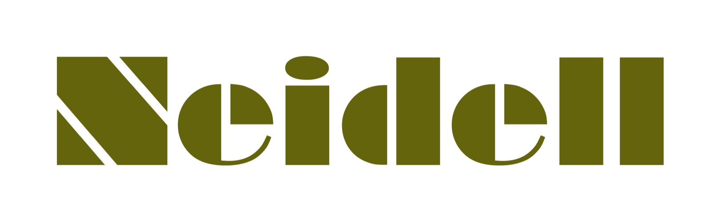
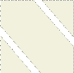

We are creating a product for the future. Our cutting-edge technology, visionary team, and unrelenting work ethic will put us miles ahead of the competition.
The hologram, which means whole image, was first conceived in 1948 by the Hungarian scientist Dennis Gabor while working on electron microscopy resolution. The idea was not put to use until after the invention of the laser by Charles Towns and colleagues. The first hologram was made in 1967, and in 1971, the hologram won the Nobel Prize in Physics. Today holography use is commonplace, and digital 3D holography using ultrasound is used for petroleum exploration, thanks to innovative work by Normal S. Neidell. Neidell, along with Stephen Z. Fadem, has envisioned using 3d holography in medical imaging.
